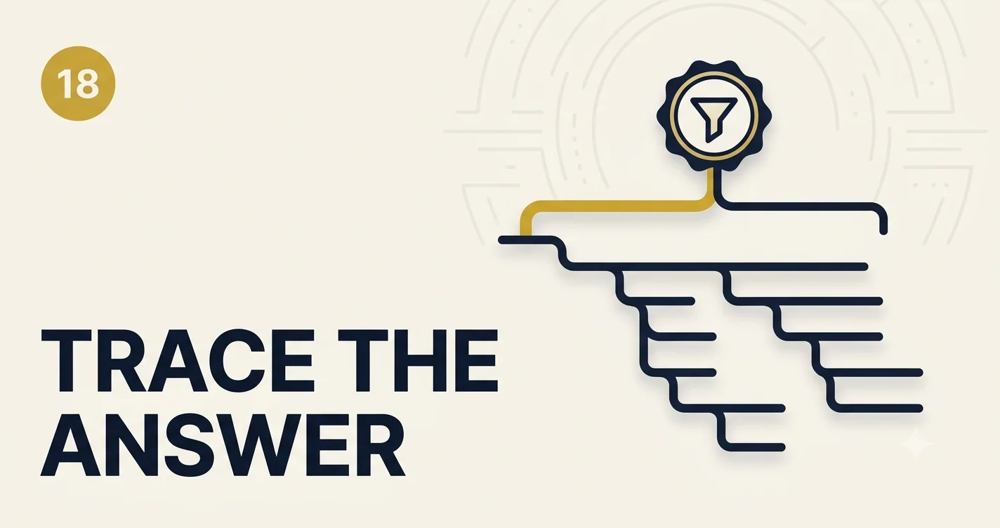

Observability for GenAI Systems
Classic APM tells you the pod restarted. GenAI observability tells you why the answer was wrong, which retrieval hop failed, and whether users abandoned before token two.
The incident without a trace
Support reported “the bot lied.” Logs showed HTTP 200. The model call succeeded. Without span-level attribution we burned two days guessing—was it RAG, a tool, or a policy change? We needed one trace ID per user turn linking retrieval, prompts (hashed), model, tools, guardrails, and feedback.
Three pillars, GenAI-shaped
- Metrics — TTFT, E2E, token volume, cache hit rate, abstain rate, $/request.
- Logs — structured events; never raw PII prompts in shared logs.
- Traces — parent span = user request; children = embed, search, rerank, LLM, tools, guardrails.
Add a fourth lane: quality signals — offline eval scores, online thumbs-down, judge model flags—joined by trace_id.
Reference architecture
flowchart TB
App[Orchestrator] --> OT[OpenTelemetry]
OT --> TS[Trace store]
OT --> M[Metrics]
Eval[Eval pipeline] --> TS
FB[User feedback] --> TS
TS --> Dash[Dashboards + alerts]
Minimum Viable Dashboard builder
Select signals for your maturity. The preview fills tiles; gaps list what you still need before production sign-off.
What to put on every span
| Attribute | Why |
|---|---|
tenant_id, feature_id | Cost and incident blast radius |
model_id, prompt_hash | Regression correlation |
kb_version, chunk_ids | RAG debugging |
input_tokens, output_tokens | FinOps + latency |
guardrail_outcome | Safety audits |
Alerting that wakes the right person
- SLO burn — TTFT p95 > 3s for 15m → platform.
- Quality drift — thumbs-down rate 2× baseline → product + ML.
- Abstain spike — may mean retrieval broke, not “model mood.”
- Cost anomaly — tokens/request 3× → check cache invalidation or prompt bloat.
Sampling and privacy
Store prompt/response payloads in a restricted store with retention limits; default traces carry hashes only. Sample 100% of failures and 1–5% of successes for deep storage. Redact before export to third-party APM.
Challenge
Pick five P0 signals below and implement them this sprint. Tie one alert to TTFT and one to quality drift. Run a fire drill: find one bad answer’s full trace in under five minutes.